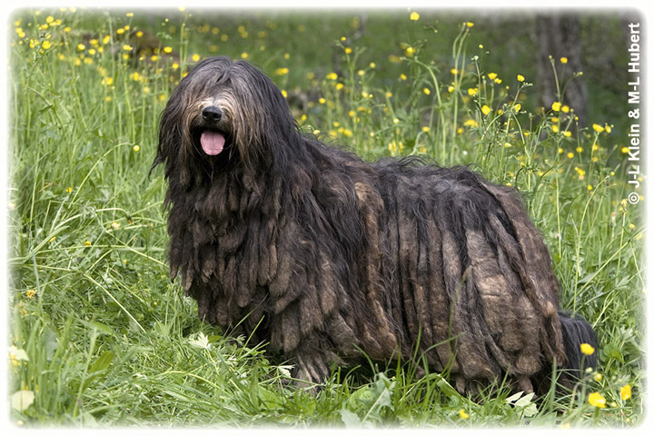

The Bergamasco is different from other dogs. As you can see it looks very different from most dogs we see on a daily bases. The Bergamasco Originated in the Alps and that is why it looks the way it does. The Alps had certain elements which made the dogs have to grow so much hair in order to survive in the harsh climate.This is just some basic informtion about where they come from and why they look the way they look.
| Benefits | Downs |
|---|---|
| They are independent | alot of hair to deal with |
| Very Adaptable | Can bark much |
| High affection level | Very Territorial |
| Great watchdogs | Needs excercise but not to frequently |
| does not need much grooming | not so stranger friendly |
| good life span | Can be scary when seen by children |
The Bergamasco has a small amount of history behind them.It is an Italian sheepherding breed who gets its name from its hometown,Bergamo.He is also found in other parts around the country. After World War II, they were in danger of becoming extinct, because sheep herders were not around.Soon an Italian breeder stepped into the picture to save the breed.Her name was Dr.Maria Andreoli.